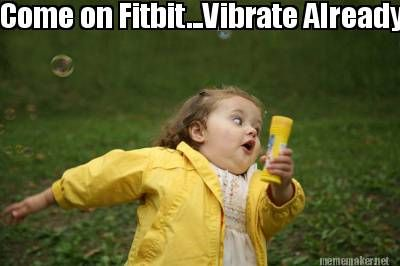
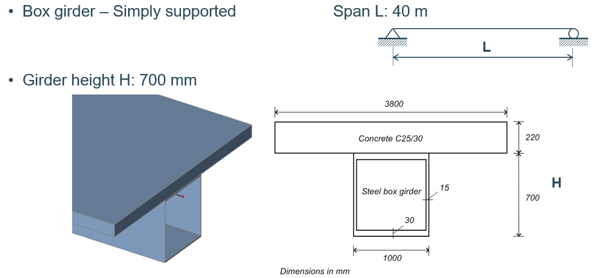
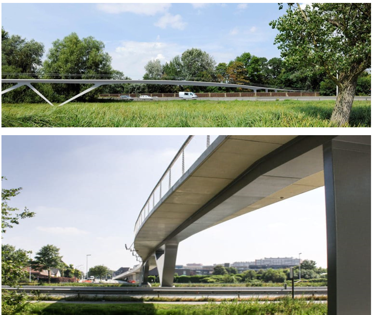

Task 6: Good Vibes
Type: Technical Reasoning — Footbridge Dynamics



Problem reference diagrams
Problem Statement
Structure: Inspired by Parkbos footbridge with steel box section and concrete deck
Questions to Solve:
- Fundamental Frequency: What is the fundamental vertical natural frequency in Hz?
- Tuned Mass Damper: What is the required mass of a Tuned Mass Damper (TMD) attached at midspan to reduce the contribution of the first mode to the acceleration level by a factor of 10 (corresponding to an increase in damping from 0.4% to 4%)?
- Frequency Response Function: Present the frequency response function (FRF) for input and output at midspan without and with the TMD
Brief
Use AI to support structural dynamics reasoning, calculation setup, and interpretation.
Deliverables
- Final numerical answers
- Short reasoning note
- Interpretation of what the TMD achieves
- "How we did it" documentation
Scoring Criteria
- Correctness: Are answers within ±5% of target?
- Reasoning Quality: Is the logic sound?
- Interpretation: Is the physical meaning clear?
- Clarity: Are explanations clear?
What It Teaches
- AI for dynamics reasoning and problem solving
- Technical problem structuring
- Interpreting damping and response reduction
- Identifying where AI is reliable or unreliable in advanced mechanics
Submission
Submit Solution & Report